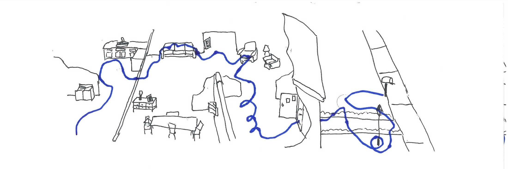
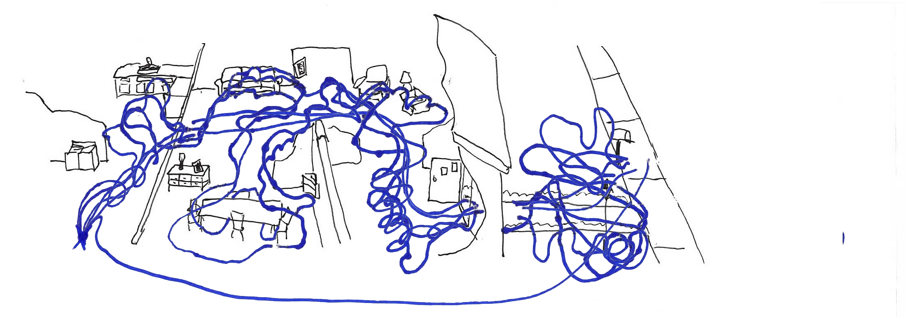

When I was a kid I loved reading the Family Circus. My favorite strips were the "dotted lines" ones, which showed Billy's movements over time:
These strips gave a clear narrative of Billy's day. In the strip above, Billy, a fun loving kid, was given a task by his mother to put some letters in the mailbox before the mailman arrives. Billy took the letters, ran into the kitchen, then dashed into the living room, jumped on the couch, sprinted to the dining room, crawled under the dining room table, skipped into the TV room, jumped into the crib, twirled into the foyer, stumbled outside, swung around the light post, then ran to the mailbox.
We know the end result: Billy failed to get to the mailbox in time.
With this picture in mind, let's do a thought experiment.
Let's imagine that right now, once again, Billy and his mom are standing in the laundry room and she's about to give him the mail. What are the odds that Billy gets to the mailbox in time?
If you answered: "somewhere between 0 and 100%" you were correct! If your answer was any more precise than that, you were wrong. Given only the single narrative above, you would have no basis for being more confident than a random guess between 0 and 1.
But, if you're like me, it would be hard to resist making a more precise guess based upon the story we saw. Humans, at least many of us, are quick to build narratives around events and then rely on those narratives to make predictions.
We know what happened before, so we try to predict the future off of that. This wouldn't be a problem if we truly knew what happened before. The problem is: we don't actually know what happened before. We only know what we witnessed before. A lot happened that we didn't witness.
The problem is we only get to witness one universe, one path, but nature in fact, is constantly generating many, many paths. What we witnessed is not the whole story. What we witnessed is just a slice of the story.
Words might not be the best way to explain this. Let's draw it out.
I'm going to redraw the strip above to show you more of the story. More of what actually happened. Because I suck at drawing, my first step will be to simplify the strip a bit. Here is my simplified Family Circus house:

And here is the path in the actual comic redrawn in my version:

Now, my assumption, based on the hunch that the multiverse theory of the world is correct, is that the universe is constantly branching, and so, somewhere out there, Billy took a direct path to the mailbox:

There's proably also a universe where he took a direct route but also took a minute to watch some TV:

And there's a universe where he took the same winding route as in the original, except without the trip to the dining room:

A universe where he took an even longer route than the original:

And maybe a universe where he snuck out the back door and took a real quick route:

Finally, perhaps there was a universe where he refused his mother's order and didn't go to the mailbox at all:

Now, although this is still just a sliver of what actually happened, it is a lot more realistic picture of what happened than just having the original, which does not tell us what happened, but just what we witnessed.
It is easy to build a narrative off of what we witnessed. But that is the problem.
Predicting what is going to happen in the future requires us understanding what happened in the past.
We can combine all of the paths above to get a more realistic look at what happened in the past:

You cannot build much of a narrative out of that. When you look honestly at nature, you cannot create a narrative. As Taleb would say, nature is what it is, it does not need a narrative.
The bottom line is, beware of narratives. Don't make predictions based off narratives.
Experiments, where we get to witness thousands or millions of universes are good for instruction, for prediction. But narratives are for entertainment.
(Influenced a lot by Taleb's new book, Antifragile.)